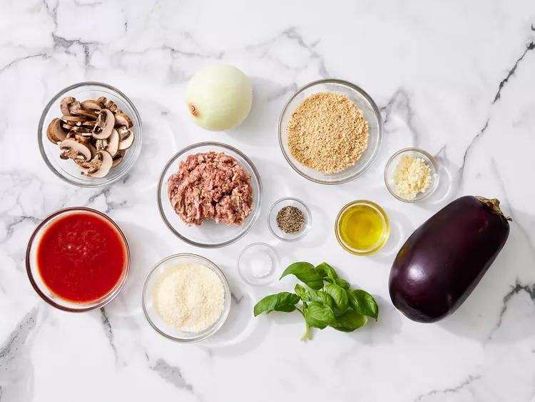

Stuffed Eggplant

Description
This delicious stuffed eggplant with a cheesy top is a must-try recipe! Great as a hearty main but you can buy the mini eggplants and use them for a side dish or appetizer.
Ingredients
- 1 (1½ pound) eggplant, halved lengthwise
- 3 tablespoons olive oil, divided
- 1/2 teaspoon salt
- 1/2 teaspoon ground black pepper
- 1/2 pound sweet Italian sausage, casings removed
- 1 cup chopped onion
- 1 cup sliced fresh mushrooms
- 4 cloves garlic, minced
- 2 tablespoons chopped fresh basil
- 1 cup tomato-basil pasta sauce
- 3/4 cup Italian seasoned panko bread crumbs, divided
- 1/2 cup grated Parmesan cheese, divided
Steps
- Step 1: Gather ingredients. Preheat the oven to 350 degrees F (175 degrees C). Line a rimmed baking sheet with foil.

- Step 2: Cut around the edge of the flesh in each eggplant half using a sharp paring knife, leaving a 1/2-inch border. Scoop out flesh using a spoon, leaving 1/2-inch-thick shell; reserve flesh and chop into bite-size pieces.

- Step 3: Brush shells with 2 tablespoons olive oil and season with salt and pepper; set aside.

- Step 4: Heat remaining 1 tablespoon olive oil in a large, deep skillet over medium high heat. Add sausage, onion, mushrooms, and garlic; cook and stir until sausage is evenly brown. Stir in reserved chopped eggplant and basil. Add pasta sauce; cook and stir for 5 minutes. Mix in 1/2 cup of panko and 1/4 cup Parmesan cheese.

- Step 5: Stuff mixture into eggplant shells. Combine remaining panko and cheese in a small bowl; sprinkle over stuffing.
- Step 6: Bake in the preheated oven until eggplant is tender, 45 to 50 minutes.